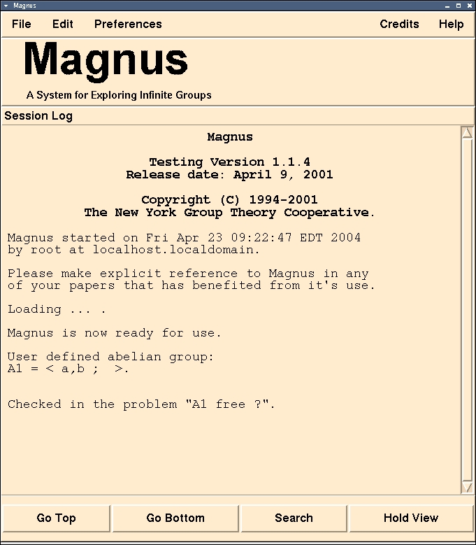

Magnus
A System for Exploring Infinite Groups
[
prev
] [
home
] [
next
]
An Example Session
Asking a Question about a Group
For this example we are going to ask if the group
A1
which we have
selected
is
free abelian
. To do this we:
(4) Select
Tools
from the main menu
(5) Select
Is A1 ...
from the dropdown menu
(6) Select
Is A1 free abelian?
from the submenu
This will have several effects. The first effect is to update the Session Log indicating that we have "checked in" a problem:

[
prev
] [
home
] [
next
]